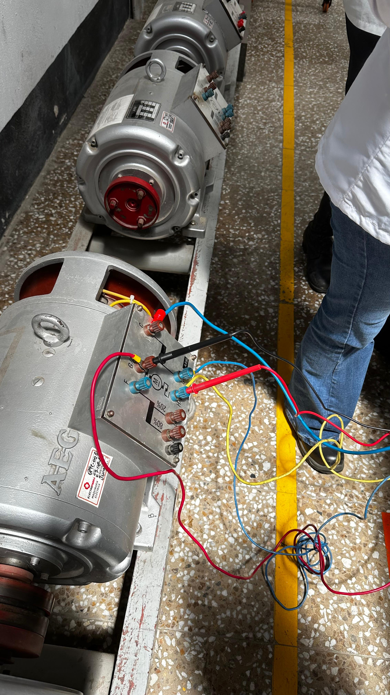
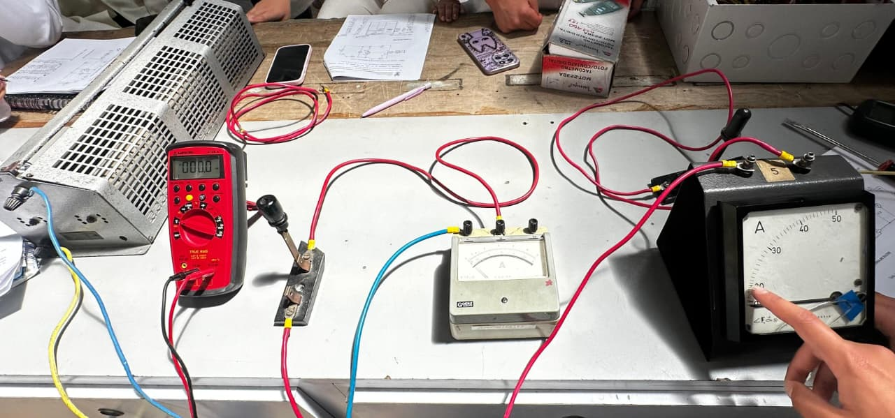

LICENCIATURA EN TECNOLOGÍA
LICENCIATURA EN TECNOLOGÍA
4. Laboratorio Máquinas Eléctricas

¿Qué se hace en un laboratorio de Máquinas Eléctricas?

Es un espacio académico donde los estudiantes realizan prácticas para comprender cómo funcionan las máquinas que transforman la energía eléctrica en energía mecánica y viceversa.
En este laboratorio se estudian principalmente los motores eléctricos, generadores y transformadores, mediante montajes experimentales, mediciones y pruebas de funcionamiento.
¿Qué se puede hacer en el laboratorio de Máquinas Eléctricas?
Reconocimiento de motores eléctricos
En esta práctica los estudiantes aprenden a identificar los diferentes tipos de motores eléctricos, sus partes y la función de cada una. Un motor eléctrico es una máquina que transforma la energía eléctrica en energía mecánica de rotación.
¿Qué se puede hacer?
- Identificar las partes principales de un motor: carcasa, estator, rotor, bobinados, eje y bornes de conexión.
- Reconocer motores de corriente continua y motores de corriente alterna, monofásicos y trifásicos.
- Leer la placa de características: tensión, corriente, potencia, velocidad y frecuencia.
- Revisar el estado del motor y la identificación de los terminales de sus bobinas.
- Medir la resistencia de los bobinados con un multímetro.

Prácticas con motores de corriente continua (DC)
El motor de corriente continua (DC) transforma la energía eléctrica de una fuente de corriente continua en movimiento. Se utiliza mucho en prácticas porque su velocidad y su sentido de giro se pueden controlar con facilidad.
¿Qué se puede hacer?
- Conectar el motor a una fuente de corriente continua y observar su arranque.
- Invertir la polaridad de la alimentación para cambiar el sentido de giro.
- Variar la tensión de alimentación para controlar la velocidad del motor.
- Medir tensión, corriente y velocidad durante el funcionamiento.
- Comparar el comportamiento del motor en vacío y con carga.
- Reconocer las formas de conexión de los devanados: serie, paralelo y compuesta.
Generadores eléctricos
Un generador eléctrico transforma la energía mecánica en energía eléctrica mediante el principio de la inducción electromagnética: cuando un conductor se mueve dentro de un campo magnético, se produce una tensión eléctrica.
¿Qué se puede hacer?
- Observar cómo, al hacer girar el eje del generador, se produce una tensión eléctrica.
- Medir la tensión generada a diferentes velocidades de giro.
- Relacionar la velocidad de giro, el campo magnético y la tensión obtenida.
- Conectar una carga, como una lámpara o una resistencia, y medir la corriente que suministra.
- Diferenciar un generador de corriente continua de un alternador de corriente alterna.
Ensayos y mediciones de máquinas eléctricas
Los ensayos permiten comprobar cómo funciona una máquina eléctrica, qué tan bien aprovecha la energía y si sus valores coinciden con los indicados por el fabricante.
¿Qué se puede hacer?
- Medir la resistencia de los bobinados.
- Realizar ensayos en vacío y con carga.
- Medir tensión, corriente, potencia y velocidad con instrumentos de medición.
- Calcular las pérdidas y el rendimiento de la máquina.
- Registrar los datos en tablas y elaborar gráficas.
- Comparar los resultados con los datos de la placa de características.
